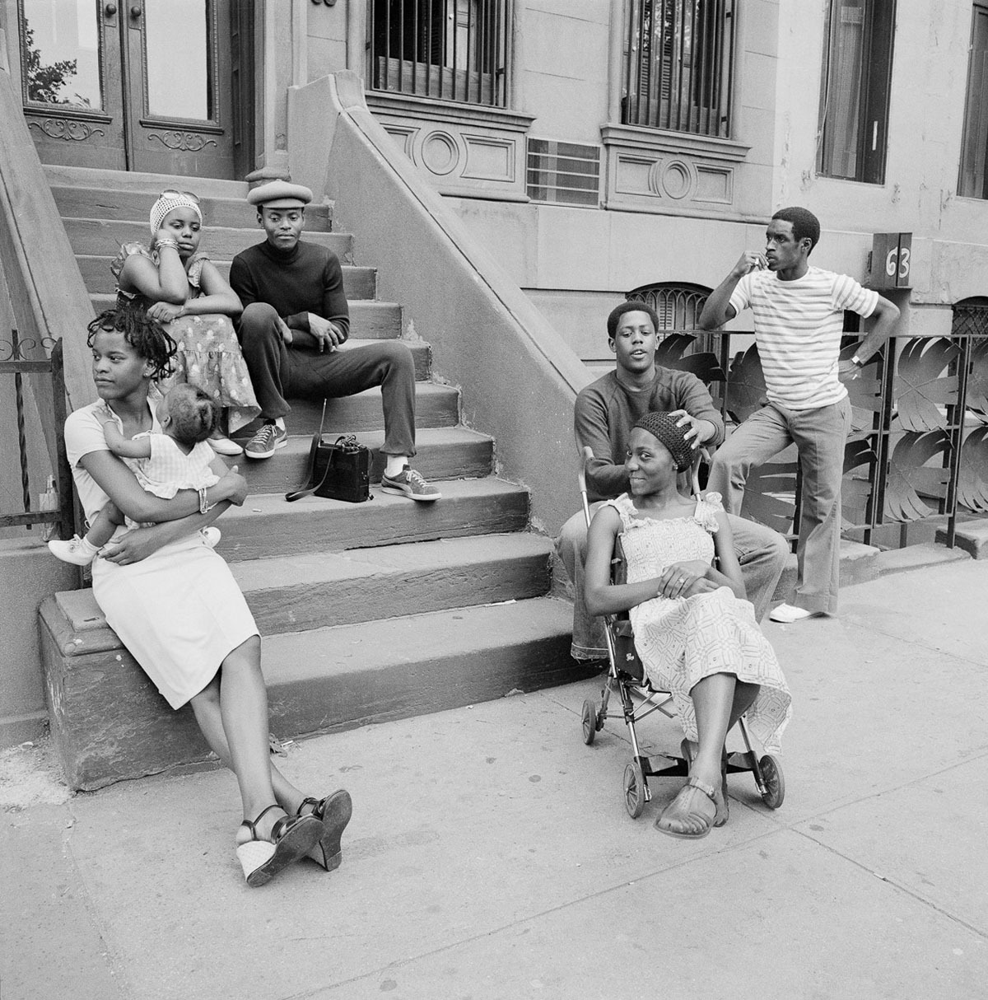

Melrose Street & Broadway, Bushwick, Brooklyn, 1973

Surf Ave, Coney Island, 1988
Melrose Street & Broadway, Bushwick, Brooklyn, 1973
Riverside Park, 1942

Surf Ave, Coney Island, 1988
Ven piece, 1988

Shot up phone booth, 1988

The beginning of the end. 75th and 1st, 1983

Alphabet City, 1977

I wasn’t going to post a WTC image today, but c'mon.
3rd Ave and 165th St in the Bronx, 1981

3rd Avenue El station, Gun Hill Road, 1973
Midtown porn! $2.99

Dirty LL trains, 1974
Ridin’ solo, late 70s

Moody scene, Central Park West, 1972

7th Ave and 48th Street, 1976
Ridin’ while ridin’, 1983
Garfinkel’s Drugs, 9th Street and Avenue A, 1972

Times Square, 1971
Whoopsie
Happy to be leaving Coney Island
Fuck yeah.
Hangin’ on E. 3rd Street, 1975
Queens Blvd under the J train, 1977

Charles Mingus, April 22, 1922 – January 5, 1979.
1951 photo by Robert Frank.

Directing traffic during the ‘77 blackout
People stuck in Grand Central during the ‘77 blackout
The Statue of Liberty is smaller than I remember.
Battery Park, 1986
‘77 blackout, Greenpoint Ave. at Franklin St., Brooklyn
34th Street during the infamous ‘77 blackout

Elmhurst Queens 1980s
50th and Broadway, 1984

10-speeds on the subway, Union Square, 1983
Bowery, 1984

Car on fire in Queens, 1984

IBM Crew at the layups, 1984
Across the street from The Strand Bookshop, 1970s. 12th and Broadway.
The TT train at 86th Street and 20th Ave, Brooklyn, 1967
{kind=link}